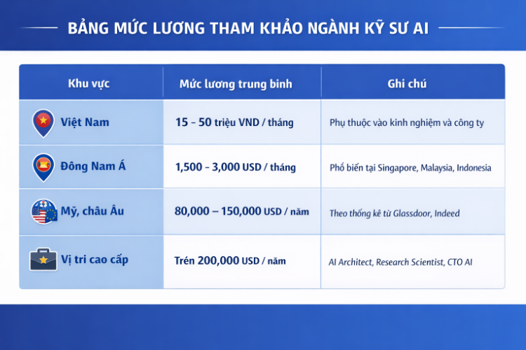

📘 Mục lục
1. Cơ hội nghề nghiệp
Ngành Trí tuệ nhân tạo (AI) đang thiếu hụt nhân lực nghiêm trọng trên toàn cầu. Theo báo cáo của LinkedIn và Diễn đàn Kinh tế Thế giới (World Economic Forum), AI là một trong những kỹ năng phát triển nhanh nhất và có nhu cầu cao nhất trong thập kỷ tới. Điều này mở ra rất nhiều cơ hội việc làm hấp dẫn cho những ai theo đuổi ngành Kỹ sư AI.
🔍 Vị trí tuyển dụng phổ biến
- AI Engineer – Kỹ sư trí tuệ nhân tạo tổng quát
- Machine Learning Engineer – Kỹ sư học máy
- Data Scientist – Nhà khoa học dữ liệu
- MLOps Engineer – Kỹ sư triển khai mô hình AI
- AI Researcher – Nhà nghiên cứu AI
- Computer Vision Engineer – Kỹ sư thị giác máy tính
- NLP Engineer – Kỹ sư xử lý ngôn ngữ tự nhiên
🏢 Làm việc tại các công ty công nghệ
Tại Việt Nam:
- FPT AI: Phát triển trợ lý ảo, nhận diện giọng nói
- VinAI Research: Trung tâm nghiên cứu AI hàng đầu Đông Nam Á
- Viettel AI: Ứng dụng AI trong quốc phòng, viễn thông
- Zalo AI: Chatbot, xử lý ngôn ngữ tiếng Việt
- VNG, Tiki, MoMo: Ứng dụng AI trong thương mại điện tử và fintech
Quốc tế:
- Google DeepMind: Nghiên cứu AI tổng quát
- OpenAI: Phát triển ChatGPT, DALL·E
- Meta AI: AI cho mạng xã hội, metaverse
- Amazon AWS AI: Dịch vụ AI đám mây
- NVIDIA: Phần cứng và phần mềm cho AI
🌱 Các hướng đi nghề nghiệp khác ngoài làm công ty
- Khởi nghiệp công nghệ (AI startup): Tự xây dựng sản phẩm AI như chatbot, ứng dụng học tập thông minh, hệ thống phân tích dữ liệu cho doanh nghiệp…
- Nghiên cứu học thuật: Làm việc tại các viện nghiên cứu, trường đại học, hoặc theo đuổi học bổng tiến sĩ.
- Giảng dạy và đào tạo: Trở thành giảng viên, chuyên gia đào tạo AI tại các trường đại học, trung tâm công nghệ, hoặc mở khóa học online.
- Tư vấn và triển khai giải pháp AI: Làm việc như một chuyên gia tư vấn, giúp doanh nghiệp ứng dụng AI vào quy trình vận hành.
- Làm việc tự do (freelancer): Nhận các dự án AI từ khách hàng toàn cầu qua Upwork, Toptal, Freelancer…
💰 Mức lương tham khảo

2. Kết luận
Ngành Kỹ sư AI không chỉ là một lựa chọn nghề nghiệp hấp dẫn, mà còn là một hành trình khám phá trí tuệ – cả của con người lẫn máy móc. Đây là ngành nghề dành cho những người dám mơ lớn, dám thử thách bản thân và mong muốn tạo ra những thay đổi tích cực cho xã hội.
Nếu bạn là người yêu thích công nghệ, đam mê sáng tạo, tò mò về cách thế giới vận hành và muốn góp phần xây dựng tương lai, thì ngành Kỹ sư AI chính là con đường dành cho bạn. Hãy bắt đầu từ hôm nay – học một dòng code, đọc một bài viết, làm một dự án nhỏ – và từng bước tiến gần hơn đến giấc mơ trở thành người kiến tạo tương lai bằng trí tuệ nhân tạo.
🌟 Câu chuyện thành công: Nguyễn Thanh Bình – Kỹ sư AI trẻ tại Viettel Solutions (Việt Nam)
Nguyễn Thanh Bình, một kỹ sư AI thuộc thế hệ Gen Z, hiện đang làm việc tại Viettel Solutions – một trong những trung tâm công nghệ hàng đầu Việt Nam.
Không chờ đợi cơ hội đến, Bình chủ động học thêm về học máy và xử lý ngôn ngữ tự nhiên (NLP), tham gia các cuộc thi AI quốc tế và liên tục cải tiến kỹ năng.
🌍 Câu chuyện thành công: Sara Hooker – Từ châu Phi đến Google Brain (Quốc tế)
Sara Hooker sinh ra tại Liberia, lớn lên ở Ireland, và từng là người đầu tiên trong gia đình học đại học.
Không chỉ là một nhà nghiên cứu xuất sắc, Sara còn sáng lập tổ chức Delta Analytics, cung cấp đào tạo AI miễn phí cho các cộng đồng thiểu số.
📬 Đăng ký tư vấn & đóng góp ý kiến
Chúng mình luôn mong muốn cải thiện nội dung và hỗ trợ học sinh THPT tốt hơn.
Nếu bạn có góp ý cho website hoặc muốn được tư vấn thêm về ngành Kỹ sư AI,
hãy điền vào biểu mẫu dưới đây nhé!
Bình luận